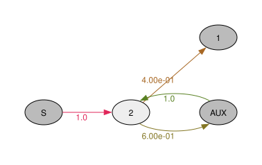
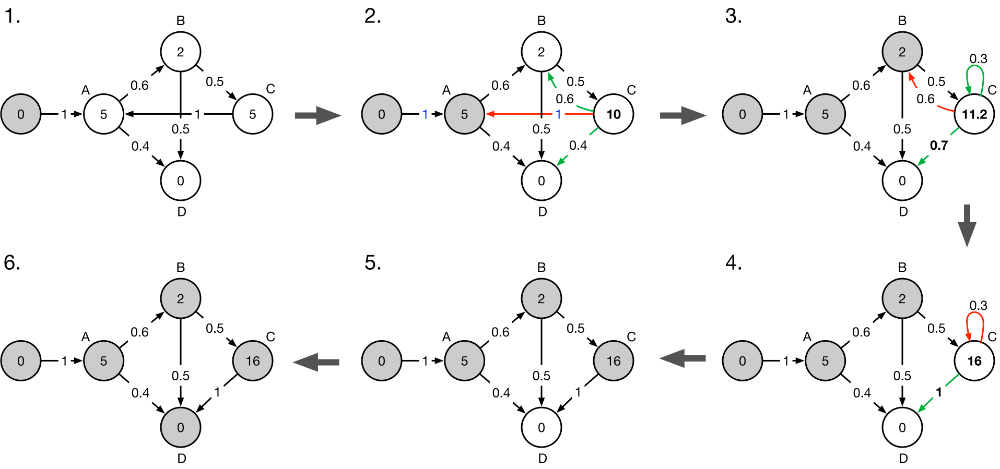

Phase-type distribution graphs for population genetics
Figure embeds 1


Figure embeds 2


Figure embeds 4

The coalescent is a Markov jump process


The coalescent is a Markov jump process
\(\boldsymbol{Q} = \begin{bmatrix} {\color{blue}-6} & {\color{blue}6} & & & 0 \\ & {\color{blue}-3} & {\color{blue}1} & {\color{blue}2} & 0 \\ & & {\color{blue}-1} & & 1 \\ & & & {\color{blue}-1} & 1 \\ 0 & 0 & 0 & 0 & 0 \end{bmatrix}\)
The coalescent is a Markov jump process

\(\boldsymbol{Q} = \begin{bmatrix} {\color{blue}-6} & {\color{blue}6} & & & 0 \\ & {\color{blue}-3} & {\color{blue}1} & {\color{blue}2} & 0 \\ & & {\color{blue}-1} & & 1 \\ & & & {\color{blue}-1} & 1 \\ 0 & 0 & 0 & 0 & 0 \end{bmatrix}\)
\(\boldsymbol{\alpha} = (1,\; 0, \; 0, \; 0)\)
Waiting time in the coalescent is a phase-type distributed
\(\tau \sim \mathrm{PH}(\boldsymbol{\alpha}, {\color{blue} \boldsymbol{S}})\)
\(\boldsymbol{\alpha} = (1,\; 0, \; 0, \; 0)\)
\({\color{blue}\boldsymbol{S}} = \begin{bmatrix} -6 & 6 & & \\ & -3 & 1 & 2 \\ & & -1 & \\ & & & -1 \\ \end{bmatrix}\)
Phase-type distribution with rewards

\(\tau \sim \mathrm{PH}(\boldsymbol{\alpha}, {\color{blue} \boldsymbol{S}}, {\color{red} \boldsymbol{r}})\)
\(\boldsymbol{\alpha} = (1,\; 0, \; 0, \; 0)\)
\({\color{blue}\boldsymbol{S}} = \begin{bmatrix} -6 & 6 & & \\ & -3 & 1 & 2 \\ & & -1 & \\ & & & -1 \\ \end{bmatrix}\)
\({\color{red} \boldsymbol{r}} = (4,\ 3,\ 2,\ 2)\)
Phase-type distributed waiting time

TMRCA (tree height):
\({\color{red} \boldsymbol{r}} = (1,\ 1,\ 1,\ 1)\)
\(\mathbb{E}[\tau] = \boldsymbol{\alpha} \boldsymbol{U}\!\, \triangle \! \,({\color{red}\boldsymbol{r}})\, \boldsymbol{e}\)
Total branch length:
\({\color{red} \boldsymbol{r}} = (4,\ 3,\ 2,\ 2)\)
\(\mathbb{E}[\tau] = \boldsymbol{\alpha} \boldsymbol{U}\!\, \triangle \! \,({\color{red}\boldsymbol{r}})\, \boldsymbol{e}\)
Matrix formulation of phase-type distributions
😀 Proofs and well-described properties:
CDF: \(\; \; \; F_\tau(t) = 1 - \boldsymbol{\alpha}e^{\boldsymbol{S}t}\boldsymbol{e}, \;\; t\geq 0\)
MGF: \(\; \; \; \mathbb{E}[\tau^k]=k!\boldsymbol{\alpha} (\boldsymbol{U}\triangle({\color{black}\boldsymbol{r}}))^{k}\boldsymbol{e}\)
😱 Complexity:
Matrix operations (\({\boldsymbol{S}}^{-1}\) and \({\boldsymbol{S}}^{t}\)) limit applicability. Needlessly so for sparse matrices.
Coalescent n=10:


A graph-formulation of phase-type distributions
Coalescent n=10:
😱
⮕
😀
::::::::
Graph computation stages

Standardization
Elimination
Recursion
Constructing an acyclic graph

Edges:
\(w(\mathrm{C}\rightarrow \mathrm{D}) = w(\mathrm{C}\rightarrow \mathrm{A})\, w(\mathrm{A}\rightarrow \mathrm{D})\)
Vertices:
\(x_A \leftarrow x_C + x_A\)
Insert the first equation in the third:
\(\begin{align*} T_C &= 5 + (5 + 0.6 \cdot T_B + 0.4 \cdot T_D) \\ &= 10 + 0.6 \cdot T_B + 0.4 \cdot T_D \end{align*}\)
Constructing an acyclic graph

\(x_\mathrm{C} +\!\,= x_\mathrm{A}\, w(\mathrm{C}\rightarrow \mathrm{A})\)
\(x_C \leftarrow 0.6 \cdot x_C\)
Insert the second equation in the third:
\(\begin{align*} T_C &= 5 + T_A + 0.6 \cdot ( T_B + 0.5 \cdot T_C + 0.5 \cdot T_D) \\ &= 11.2 + 0.3 \cdot T_C + 0.7 \cdot T_D \end{align*}\)
Constructing an acyclic graph

\(x_C \leftarrow x_C + x_C \cdot \big(\frac{1}{1-0.6}-1\big)\)
Isolate \(T_C\) in the third equation to remove self-loop:
\(\begin{align*} T_C &= 11.2 + 0.3 \cdot T_C + 0.7 \cdot T_C \\ &= 16 + T_D \end{align*}\)
Constructing an acyclic graph

Constructing an acyclic graph

Constructing an acyclic graph retaining the expected accumulated rewards


Expectation
Compute expectation by recursion in reverse topological order:

Expectation

(11, 10, 16) are the row sums of the Green matrix. I.e. the expected waiting times starting at each vertex.
Singleton branch length using reward transformation

Null rewarded node is removed and edge is created or updated:
\(w(u \rightarrow z) = w(u \rightarrow v) \frac{w(v \rightarrow z)}{\sum_{x \in x } w(v \rightarrow x)}\)

Doubleton branch length using reward transformation

Discrete phase-type distributions